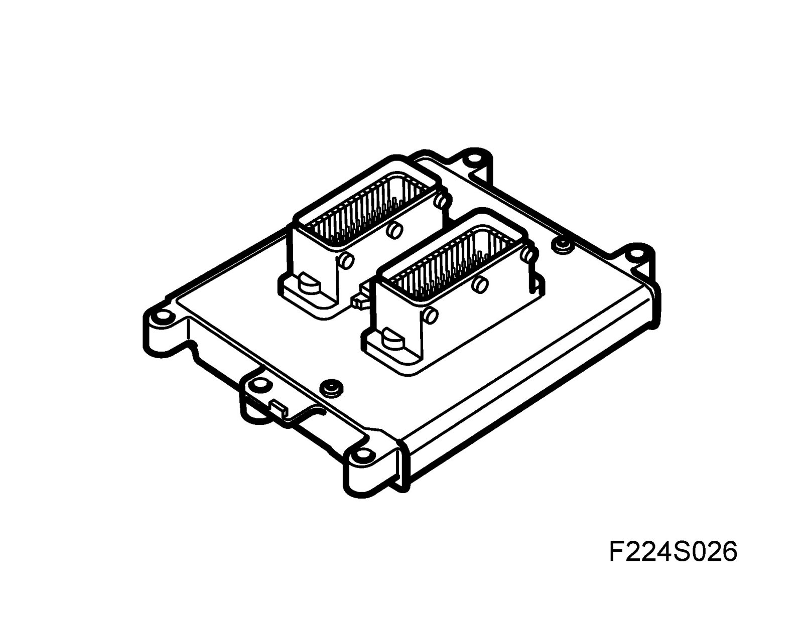
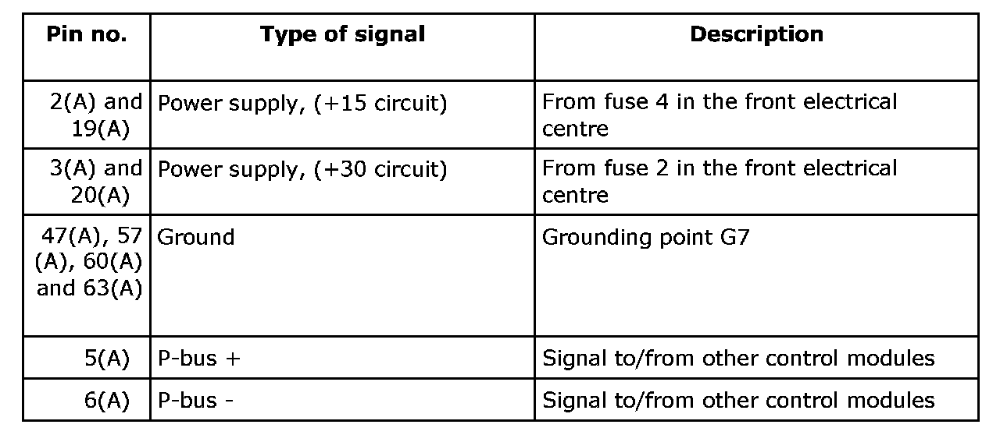
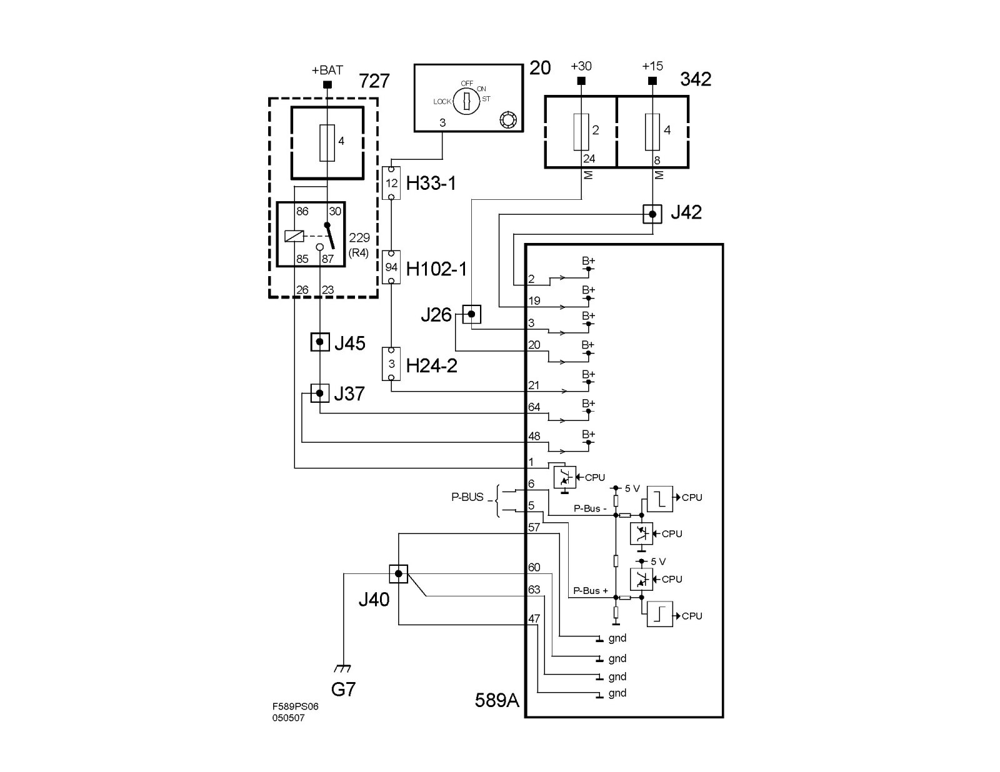

Control Module, Trionic 4-Cyl. Petrol (589)
Control module, Trionic 4-cyl. petrol (589)Location
^ Trionic control module, 4-cyl petrol, connector A (589A)
^ Trionic control module, 4-cyl petrol, connector B (589B)
Main use
Trionic T8 mainly regulates:
^ Engine torque
^ Fuel injection
^ Ignition timing
The control module has two processors. A number of sensors send information to the control module, which processes it using matrices stored in its memory after optimizing the function of the engine. Examples of these essential matrices are the timing matrices, fuel matrices and air mass matrices.
A control module can be damaged by electrostatic charges or if one of its outputs is short circuited and consequently, great care must be taken when handling control modules during fault diagnosis with BOB, for example.
Fuel injection is primarily controlled with the assistance of the mass air flow sensor. There are substitute functions for all the sensors, except the crankshaft position sensor, should a fault occur.
The atmospheric pressure is used to:
- Correct the charge air control valve PWM ratio. A greater PWM ratio is needed to attain the same air mass/combustion at low atmospheric pressures.
- Correct the PWM ratio of the ventilation system. A greater PWM ratio is needed to attain the same ventilation flow at low atmospheric pressures.
- Protect the turbocharger from overrevving at low atmospheric pressures by limiting the maximum permitted air mass per combustion.
Type

Power supply, ground and bus communication


The Trionic T8 control module has a 70-pin connector.
The control module is continuously supplied with +30 current on pin 3(A) and 20(A), and will lose its adapted values and stored trouble codes if it loses power.
The control module is adapted to a voltage between 8-16V when driving.
After turning on the ignition, the control module will be activated and turn on the CHECK ENGINE lamp as a function check. The fuel pump relay is activated for 1 second to build up pressure and then, the control module will wait for pulses from the crankshaft position sensor.